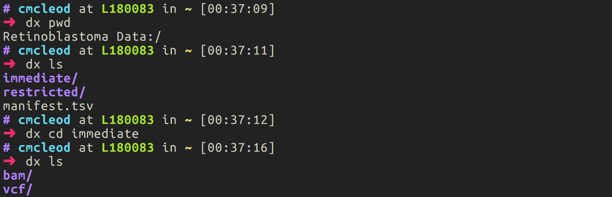

Getting started
Before you begin interacting with St. Jude Cloud Platform from the command line, you'll need to understand some details on the underlying architecture of the platform. The St. Jude Cloud Platform is built on top of a genomics cloud ecosystem provided by DNAnexus. For a comprehensive overview of how DNAnexus works, see this page.
Overview
Workspaces in DNAnexus are organized by projects, which are essentially folders in the cloud. Each data request and tool in St. Jude Cloud creates its own unique cloud workspace (DNAnexus project). For instance, a data request creates a DNAnexus project behind the scenes with the same name as the request name you specify when you request data.
Installation
Open-source software provided by DNAnexus called the dx-toolkit is used to interact with the St. Jude Cloud Platform from the command line. You can use this to create these projects, upload and download data, and many other operations. You'll need to install that software on your computer by following this guide.
Tip
A quickstart to getting up and running with the dx-toolkit:
- Install Python 2.7.13+. Note that using the system-level Python is usually not a good idea (by default, system level Python is typically too old/does not support the latest security protocols required). You can install using Anaconda (recommended) or using the default Python installer.
- Run
pip install dxpy. - Type
dx --helpat the command line.
A quick tour
Logging in
To log in using the dx-toolkit, run the following command:
dx login --noprojects
# enter username and password when prompted
Note
If you are a St. Jude employee, you'll need to follow this guide to log in instead.
Selecting a project
First, you'll need to choose which cloud workspace you would like to access. This depends on if you are downloading data from a request or working with input/output files from a tool. You can see the workspaces available to you by running the following command in your terminal:
dx select
This will present with a prompt similar to the below screenshot. A list of your available cloud workspaces will be shown with a number out to the left of each. You should enter the number corresponding to the workspace you are wanting to interact with. In the example below, the user has selected the Rapid RNA-Seq tool.

Some useful commands
Moving data back and forth between the cloud and your local computer is simple once you have selected the correct project for your tool.
You will find that many common linux commands with dx prepended.
# list available files for the tool for the main folder dx ls # list all available files for the tool dx find . # list all commands dx --help
Uploading data
You can use the following process to upload data to be used by St. Jude Cloud Platform tools:
-
First, click "View" on the tool you'd like to run from this page. In this example, we will choose the Rapid RNA-Seq tool.
-
If you have not already, click "Start" on the tool you'd like to run. This will create a cloud workspace for you to upload your data to with the same name as the tool.

-
Open up your terminal application and select the cloud workspace with the same name as the tool you are trying to run.

-
Last, navigate to the local files you'd like to upload to the cloud and use the
dx uploadcommand as specified in [upload-download-data]{role="ref"} to upload your data to St. Jude Cloud.
Downloading data
Warning
To download data from a St. Jude Cloud data request, you must have indicated that you wished to download the data in your Data Access Agreement (DAA) during your submission. Any downloading of St. Jude data without completing this step is strictly PROHIBITED.
You can use the following steps to download data from a St. Jude Cloud data request:
-
Complete a data request using the St. Jude Cloud Platform. In this example, we've created a request with the name "Retinoblastoma Data".

-
Open up your terminal application and select the cloud workspace relevant to your data request. For instance, in this case we would type
dx select "Retinoblastoma Data".
-
You can use typical commands like
dx ls,dx pwd, anddx cdto navigate around your cloud folder as you would a local folder. Your project may look different based on what data you requested and whether you were previously approved to access the data. Your data should either be in the restricted folder (if this is your first time requesting access) or the immediate folder (if you were previously granted access permission).
-
In the root of every data request is a file called
SAMPLE_INFO.txt. This should contain all of the information about the samples you checked out as well as the associated metadata we provide. -
To download data from the cloud to local storage, use the
dx downloadcommand as specified in [upload-download-data]{role="ref"}. For instance, if I wanted to download all of the BAM files to my local computer, I would typedx download immediate/bam/*.